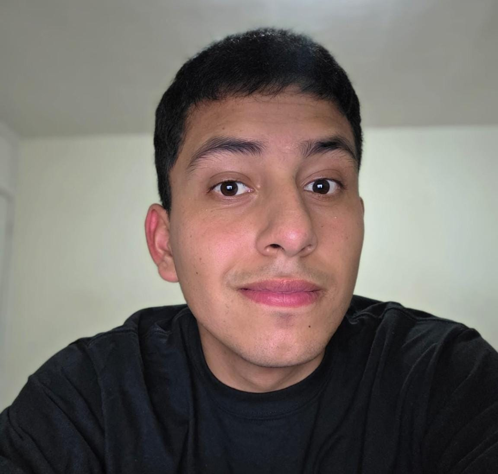

HTML
Estoy aprendiendo a crear la estructura de una página web utilizando títulos, párrafos, listas, enlaces, imágenes y etiquetas semánticas.
Estudiante de CUCEI
¡Hola! Mi nombre es Luis Ricardo Delgado Sevilla y soy estudiante de Ingeniería en Computación. Esta página es una pequeña presentación sobre mí, mis intereses y lo que estoy aprendiendo durante mi carrera universitaria.
Conóceme más
Soy una persona a la que le gusta aprender y conocer nuevas experiencias. Elegí estudiar Ingeniería en Computación porque me interesa la tecnología y quiero seguir desarrollando mis conocimientos sobre programación y desarrollo de proyectos.
También me gusta socializar y convivir con mis amigos. Fuera de la universidad disfruto los videojuegos, la comida mexicana y asistir a partidos de fútbol.
Estoy aprendiendo a crear la estructura de una página web utilizando títulos, párrafos, listas, enlaces, imágenes y etiquetas semánticas.
También estoy aprendiendo a darle estilo a las páginas utilizando colores, tipografías, fondos, márgenes, efectos y diseño responsivo.
Mi objetivo es continuar mejorando mis conocimientos y desarrollar proyectos que me permitan aprender y crecer como futuro ingeniero en computación.
| Área | Algo que me gusta |
|---|---|
| Fútbol | Ir a ver jugar a las Chivas. |
| Comida | Los chilaquiles y la comida mexicana. |
| Videojuegos | Jugar y esperar nuevos lanzamientos como GTA VI. |
| Tecnología | Aprender programación y desarrollar proyectos. |
Actualmente estudio en el Centro Universitario de Ciencias Exactas e Ingenierías, conocido como CUCEI, perteneciente a la Universidad de Guadalajara.
Conocer más sobre CUCEISi quieres dejarme un mensaje, puedes llenar el siguiente formulario.